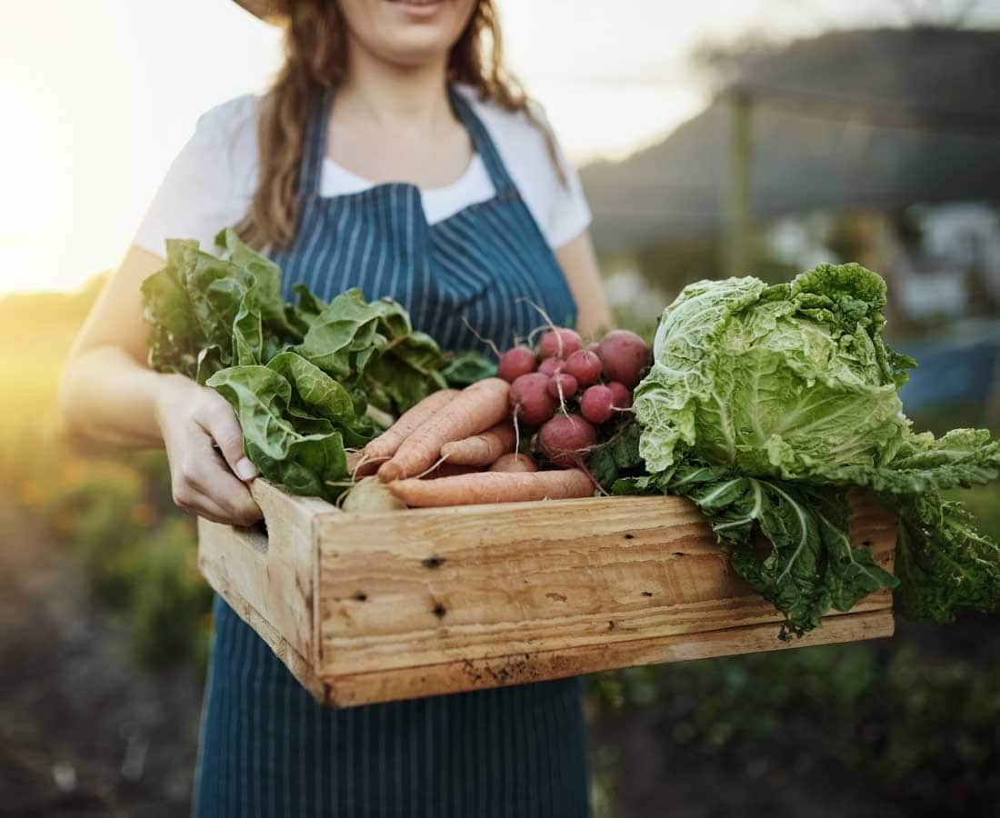

Our Story
Bountiful Foods was founded in 2013 by a group of local farmers and health enthusiasts who wanted to provide the San Diego community with access to fresh, organic produce and other natural products. The founders, who had all been involved in organic farming and food production for many years, saw a need for a community-focused organic market that could support local farmers and provide consumers with healthy, sustainable food options.
market started out as a small, independent store, sourcing products from local organic farms and artisanal producers. Over time, it grew in popularity, attracting a loyal customer base and expanding its product offerings to include a wide range of natural and organic foods, supplements, and other wellness products.
the market grew, so did its commitment to sustainability and community engagement. Bountiful Foods began offering educational workshops and events, partnering with local schools and organizations to promote healthy living and sustainable agriculture. The market also implemented eco-friendly practices, such as using renewable energy and reducing waste, to minimize its environmental impact.
Bountiful Foods is a thriving organic market, known for its high-quality products and commitment to sustainability and community engagement. Our fruit truck has expanded to several locations throughout Southern California and continues to grow, with plans to open new stores in other cities in the near future.